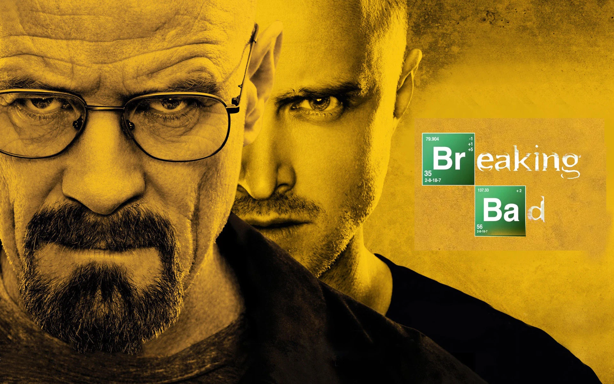

Hakkımda
Merhaba! Ben Doğa Su Eren. Moldova'da yazılım mühendisliği son sınıf öğrencisiyim. Yazılım geliştirme, web tasarımı ve kullanıcı deneyimi konularında tutkuluyum.
Film ve Dizi Önerilerim
Filmler

Inception
Christopher Nolan'ın yönettiği bu film, rüya içinde rüya konseptiyle izleyiciyi büyüleyen bir bilim kurgu şaheseridir.
Interstellar
Uzay yolculuğu ve insanlığın hayatta kalma mücadelesini konu alan bu film, görsel efektleri ve duygusal hikayesiyle dikkat çekiyor.
Diziler
Breaking Bad
Kimya öğretmeni Walter White'ın suç dünyasına adım atışını anlatan bu dizi, modern televizyonun en iyi yapımlarından biridir.
Stranger Things
80'ler nostaljisi ve bilim kurgu unsurlarıyla dolu bu dizi, küçük bir kasabada yaşanan gizemli olayları konu alıyor.
İletişim
Email: dogasueren5@gmail.com
Telefon: +90 531 624 23 03
Adres: Moldova, Chisinau